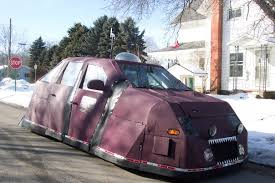

Vigilance
Les conditions météorologiques nécessitent une attention particulière.
06 • STORMLAB
Comprendre les alertes météorologiques et identifier les principaux niveaux de danger face aux phénomènes violents.
SYSTÈME D'ALERTE
Les conditions météorologiques nécessitent une attention particulière.
Des phénomènes plus intenses peuvent se produire et nécessitent une surveillance accrue.
Les conditions peuvent devenir dangereuses et nécessitent de suivre les consignes officielles.
En cas d'alerte, privilégiez toujours les informations diffusées par les services météorologiques officiels.

OBSERVATION
Le radar, les satellites et les cartes météorologiques permettent de suivre l'évolution des systèmes orageux.
📡 Voir le radarSTORMLAB V2
Continue ton exploration des outils météorologiques.